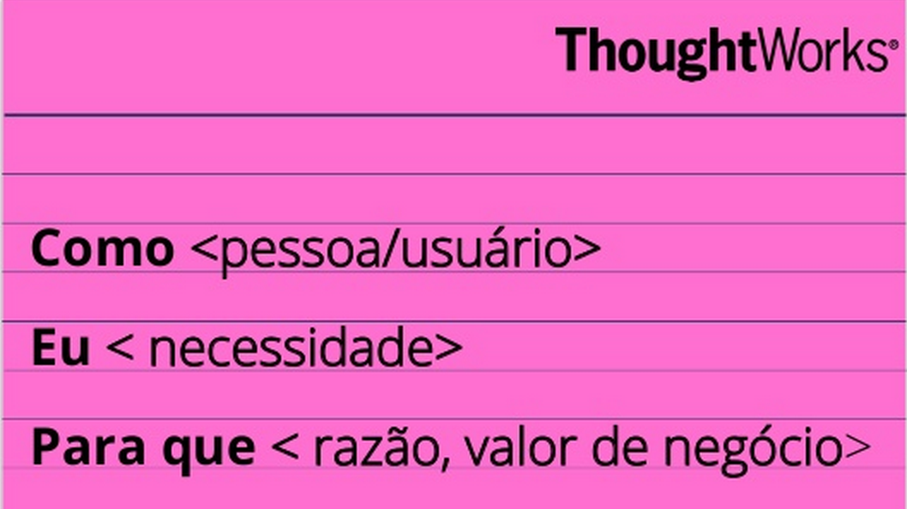
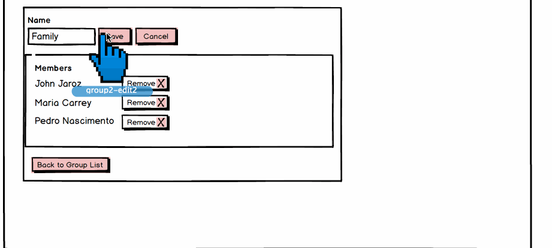
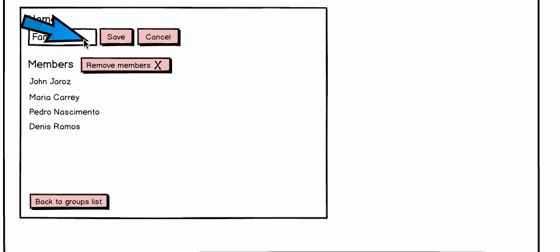

Prototipagem rápida e teste
Queria mostrar o processo de UX que segui no meu projeto para desenvolver uma nova funcionalidade. O time trabalha em um processo ágil e eu utilizei uma metodologia lean focando no usuário.
Entendimento e Definição (30 min)
Tivemos primeiramente uma reunião com analistas e stakeholders para entender o que precisa ser feito. Utilizamos o formato de estórias do usuário e sempre pensamos em qual problema que estamos tentando resolver (problem statement).

Ideação (30 min)
Após o time estar na mesma página sobre o que precisa ser feito, reuni algumas pessoas para fazermos um exercicio de sketching. Dessa maneira conseguimos gerar diferentes idéias para o mesmo problema.
Aqui há mais detalhes de como funciona o exercicio de sketching

Prototipagem rápida (1 hora)
A partir dos desenhos parti para o Balsamiq para gerar alguns wireframes rapidamente. O balsamiq possui uma maneira de criar protótipos clicaveis que funciona muito bem.
A idéia aqui é criar as 2 - 3 melhores idéias para poder testar com usuários.
Wireframes

Protótipo clicavel

Para a criação da animação utilizei o software LICEcap.
Testar (1 hora)
Após gerar os prótotipos fui para um café para testar com alguns usuários utilizando a técnica de Guerrilla User Testing. A idéia era testar com 5 usuários tentando testar um grupo mais diverso possível (sexo, etnia, idade, experiência com computadores). Claro que nem sempre é possível pegar um grupo totalmente diverso pois não entrevistamos as pessoas antes de testar. Por isso deve-se testar frequentemente, no minimo 1 vez por semana.
Perguntas para se fazer durante o teste:
- O que você acha que essa página faz?
- Você precisa editar tal informação, como você faria isso nessa tela?
- O que você espera que aconteça quando clicar aqui?
- O que tu mudaria nessa aplicação?
- Qual versão tu gostou mais e porque?
Imagem das notas que fiz depois do teste com os primeiros usuários. É importante tomar nota para depois utiliza-las quando fores retrabalhar os designs.

Iteração (1 hora)
Após realizar os testes dei uma revisada nas notas que fiz e comecei a gerar novas idéias e incrementar os protótipos/wireframes.

Testar de novo (30 min)
Fiz mais testes usando guerrilla user testing das diferentes versões com 3 usuários até escolher o design que irei seguir em frente.
Esse processo pode ser repetido inúmeras vezes até se ter a definição do modelo a seguir para implementação. Nesse ponto os wireframes e protótipos serão passados para os visual designers e desenvolvedores poderem trabalhar em cima.
Considerações finais
O processo inteiro demorou em torno de 4 - 5 horas. É um processo bem rápido e isso quebra alguns pré-conceitos que pessoas tem sobre UX em relação a testes e criação de protótipos que é um processo lento e caro.